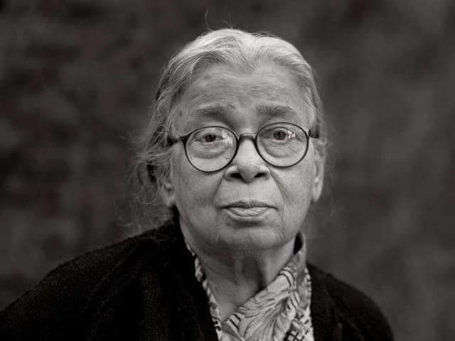

Mahasweta Devi (14th January 1926 – 28th July 2016) was an Indian writer in Bengali and an activist. Her notable literary works include Hajar Churashir Maa, Rudali, and Aranyer Adhikar. She was a leftist who worked for the rights and empowerment of the tribal people (Lodha and Shabar) of West Bengal, Bihar, Madhya Pradesh and Chhattisgarh states of India. She was honoured with various literary awards such as the Sahitya Akademi Award (in Bengali), Jnanpith Award and Ramon Magsaysay Award along with India's civilian awards Padma Shri and Padma Vibhushan.
Devi wrote over 100 novels and over 20 collections of short stories primarily written in Bengali but often translated to other languages. Her first novel, titled Jhansir Rani, based on a biography of the Rani of Jhansi was published in 1956. She had toured the Jhansi region to record information and folk songs from the local people for the novel.
Mahasweta Devi's specialisation lay in the studies of Adivasi, Dalit and Marginalized citizens with a focus on their women. They were associated as protestor in the face of British colonialism, the Mahajanas and upper class corruption and injustice. She lived in the Adivasi villages in West Bengal, Bihar, Madhya Pradesh, Chhattisgarh years afer years, befriending them and learning from them. She has embodied their struggles and sacrifices in her words and characters. She had claimed that her stories aren't her creation, they are the stories of the people of her country. Such an example is her work "Chotti Mundi Ebong Tar Tir".
In 1964, she began teaching at Vijaygarh Jyotish Ray College (an affiliated college of the University of Calcutta system). In those days Vijaygarh Jyotish Ray College was an institution for working-class women students. During that period she also worked—as a journalist and as a creative writer. She studied the Lodhas and Shabars, the tribal communities of West Bengal, women and dalits. In her elaborate Bengali fiction, she often depicted the brutal oppression on the tribal people and untouchables by the powerful authoritarian upper-caste landlords, money-lenders, and venal government officials. She wrote of the source of her inspiration:
I have always believed that the real history is made by ordinary people. I constantly come across the reappearance, in various forms, of folklore, ballads, myths and legends, carried by ordinary people across generations. ... The reason and inspiration for my writing are those people who are exploited and used, and yet do not accept defeat. For me, the endless source of ingredients for writing is in these amazingly noble, suffering human beings. Why should I look for my raw material elsewhere, once I have started knowing them? Sometimes it seems to me that my writing is really their doing.
Postcolonial scholar Gayatri Chakravorty Spivak has translated Devi's short stories into English and published three books: Imaginary Maps (1995, Routledge), Old Woman (1997, Seagull), The Breast Stories (1997, Seagull).
Mahasweta Devi was born in a brahmin family on 14th Jan 1926 in Dacca, British India (now Dhaka, Bangladesh). Her father, Manish Ghatak, was a poet and novelist of the Kallol movement, who used the pseudonym Jubanashwa (Bengali: যুবনাশ্ব). Ghatak's brother was filmmaker Ritwik Ghatak. Devi's mother, Dharitri Devi, was also a writer and a social worker whose brothers include sculptor Sankha Chaudhury and the founder-editor of Economic and Political Weekly of India, Sachin Chaudhury.
Devi's first schooling was in Dhaka, Eden Montessori School (1930). After that, she moved to West Bengal (now in India). Then she studied in Midnapore Mission Girls High School (1935). After that she was admitted to Santiniketan (1936 to 1938). After that, she studied at Beltala Girls' School (1939-1941) where she finished her matriculation. Then in 1944 she got I.A. from Asutosh College. She attended Rabindranath Tagore-founded Visva-Bharati University and completed a B.A. (Hons) in English, and then finished an M.A. in English at Calcutta University.
Mahasweta Devi raised her voice several times against the discrimination suffered by tribal people in India. Devi's 1977 novel Aranyer Adhikar (Right to the Forest) was about the life of Birsa Munda. And in June 2016, consequent to Devi's activism, the Jharkhand State Government finally saw to the removal of the manacles from the figure of Munda, which had been part of the commemorative sculpture of the notable young tribal leader due to its having been based on a photograph dating from the era of British rule.
On 27th February in 1947, she married renowned playwright Bijon Bhattacharya, who was one of the founding fathers of the Indian People's Theatre Association movement. In 1948, she gave birth to Nabarun Bhattacharya, who became a novelist and political critic. She worked in a post office but was fired for her communist leaning. She went on to do various jobs, such as selling soaps and writing letters in English for illiterate people. In 1962, she married author Asit Gupta after divorcing Bhattacharya. In 1976, the relationship with Gupta ended.
On 23rd July 2016, Devi suffered a major heart attack and was admitted to Belle Vue Clinic, Kolkata. Devi died of multiple organ failure on 28th July 2016, aged 90. She had suffered from diabetes, sepsis and urinary infection.
| Previous | Home |